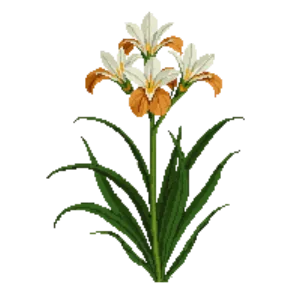

New Zealand iris
Libertia peregrinans

New Zealand iris is a perennial for focal point, mid-border, suited to full sun and loam, sandy soil or acid soil, flowering May, Jun.
| Type | Perennial |
|---|---|
| Mature height | 60 cm |
| Spread | 45 cm |
| Aspect | full sun |
| Foliage | Evergreen |
| Hardiness | USDA 8a-11a, RHS H4 |
| Pollinator-friendly | Yes |
| Pet-safe | Not confirmed |
Where to use it in a border
At around 60 cm, it sits best toward the back of a border, or on its own as a focal point with room around it. Give it about 45 cm of room to spread, roughly 2 to the metre when planted in a drift. It is hardy across USDA zones 8a to 11a and rated H4 by the RHS, so check it suits your area before planting.
It appears in our lists of full sun, sandy soil, acid soil, evergreen plants, pollinator-friendly plants.
Flowering through the year
Worth knowing
- Evergreen, so it keeps the border furnished through winter.
- It tolerates acid soil but dislikes shallow chalk.
- Its flowers are valued by bees and other pollinators.
Good companions
Plants that share its conditions and style, chosen to complement its place in the border:
- Abelia 'Kaleidoscope'to flower when it does not
- Bee's Bliss Sageto edge in front
- Bird of Paradisefor height behind it
- Black Sagefor height behind it
- Blue Fescueto edge in front
- Bottlebrush 'Little John'to flower when it does not
Garden styles
See New Zealand iris set in a full border, with spacing and companions worked out for your own conditions, in Border Builder.